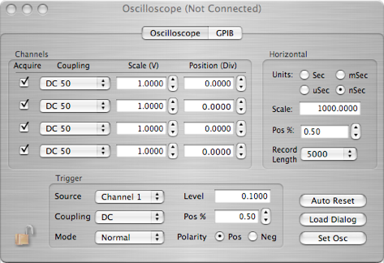

LeCroy 950 Digital Scope


Set the trigger source, (external, line, specific channel), coupling (AC, DC, GND), Mode (Normal, Auto), the trigger level in volts, trigger position, and polarity of the trigger.

Enables which channels will acquire, sets channel coupling, vertical scale, and position
1GHz, 2 Ch, 40 MS/s, 10 bit vertical resolution digital oscilloscope from LeCroy.
Scope Data Formats
The scopes can put out three types of data records. A fixed length time record, a fixed length GTID record, and a variable data record. The formats are as follows:
Waveform data record:
xxxx xxxx xxxx xxxx xxxx xxxx xxxx xxxx
^^^^ ^^^^ ^^^^ ^^-----------------------Data ID
-----------------^^ ^^^^ ^^^^ ^^^^ ^^^^-n longs + 2
xxxx xxxx xxxx xxxx xxxx xxxx xxxx xxxx
------^^^ ^-----------------------------scope gpib address
-----------^^^ ^------------------------scope channel
n bytes of scope data follow immediately.
GTID Record:
Short form:
xxxx xxxx xxxx xxxx xxxx xxxx xxxx xxxx
^^^^-^^---------------------------------Scope Gtid ID
--------------------^^^^ ^^^^ ^^^^ ^^^^-global trigger id
Long form:
xxxx xxxx xxxx xxxx xxxx xxxx xxxx xxxx
^^^^ ^^^^ ^^^^ ^^-----------------------Scope Gtid ID
-----------------^^ ^^^^ ^^^^ ^^^^ ^^^^-length (always 2 longs)
xxxx xxxx xxxx xxxx xxxx xxxx xxxx xxxx
--------------------^^^^ ^^^^ ^^^^ ^^^^-global trigger id
Time Record:
xxxx xxxx xxxx xxxx xxxx xxxx xxxx xxxx
^^^^ ^^^^ ^^^^ ^^-----------------------LeCroyModel Clock ID
-----------------^^ ^^^^ ^^^^ ^^^^ ^^^^-length (always 3 longs)
xxxx xxxx xxxx xxxx xxxx xxxx xxxx xxxx
------^^^-------------------------------channel
----------^^^^ ^^^^ ^^^^ ^^^^ ^^^^ ^^^^-first part of time
xxxx xxxx xxxx xxxx xxxx xxxx xxxx xxxx
^^^^ ^^^^ ^^^^ ^^^^ ^^^^ ^^^^ ^^^^ ^^^^-rest of time record
Set the horizontal scale (time/division), the position displayed on the scope, and the number of points digitized
Auto Reset: Issue a factory default reset.
Load Dialog: Load dialog with values from scope. Set Osc: Load scope with this dialog’s values.